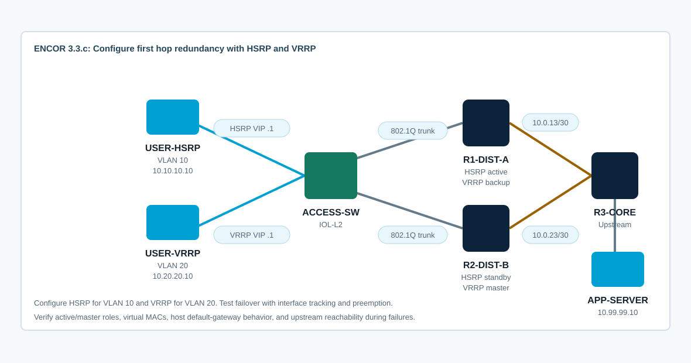

Overview
This lab targets ENCOR 3.3.c: configure first hop redundancy protocols, such as HSRP and VRRP. You will configure HSRP for VLAN 10 and VRRP for VLAN 20 across two distribution routers, verify the active/master gateway roles, and test failover with tracking and preemption.
The starting CML topology includes VLAN trunks, access ports, routed uplinks, host addressing, and upstream routing. FHRP is intentionally absent so the hosts initially point to a gateway address that does not exist until you configure the virtual gateways.
Topology
R1-DIST-A and R2-DIST-B are redundant default gateways on VLANs 10 and 20. ACCESS-SW provides Layer 2 access and trunks both VLANs to the routers. R3-CORE and APP-SERVER provide an upstream destination for end-to-end failover tests.

Task 1: Baseline VLANs, Routing, and Host Failure
Confirm the Layer 2 and routed underlay first. The user hosts should fail to reach their default gateway virtual IPs before FHRP is configured.
show vlan brief
show interfaces trunk
show ip interface brief
show ip route
show cdp neighbors detail
show standby brief
show vrrp briefFrom the hosts:
# USER-HSRP
ping -c 3 10.10.10.1
ping -c 3 10.99.99.10
# USER-VRRP
ping -c 3 10.20.20.1
ping -c 3 10.99.99.10Expected interpretation: host-to-gateway fails because 10.10.10.1 and 10.20.20.1 are virtual gateway addresses that have not been created yet.
Task 2: Configure HSRP for VLAN 10
Configure R1-DIST-A as the preferred HSRP active router for VLAN 10 and R2-DIST-B as standby. Use preempt so the preferred gateway can resume active role after recovering.
! R1-DIST-A
interface Ethernet0/0.10
standby version 2
standby 10 ip 10.10.10.1
standby 10 priority 120
standby 10 preempt
standby 10 authentication md5 key-string ENCOR-HSRP
!
! R2-DIST-B
interface Ethernet0/0.10
standby version 2
standby 10 ip 10.10.10.1
standby 10 priority 100
standby 10 preempt
standby 10 authentication md5 key-string ENCOR-HSRPVerify both sides:
show standby brief
show standby Ethernet0/0.10
show standby neighbors
show arp | include 10.10.10.1
show mac address-table dynamic vlan 10Depth check: HSRP has an active and standby router. The host default gateway points to the virtual IP, while the active router answers ARP for that virtual IP using an HSRP virtual MAC.
Task 3: Configure VRRP for VLAN 20
Configure R2-DIST-B as the preferred VRRP master for VLAN 20 and R1-DIST-A as backup. This gives you both protocol behaviors and avoids making a single router primary for every VLAN.
! R1-DIST-A
interface Ethernet0/0.20
vrrp 20 ip 10.20.20.1
vrrp 20 priority 100
vrrp 20 preempt
!
! R2-DIST-B
interface Ethernet0/0.20
vrrp 20 ip 10.20.20.1
vrrp 20 priority 120
vrrp 20 preemptVerify:
show vrrp brief
show vrrp
show arp | include 10.20.20.1
show mac address-table dynamic vlan 20Interpretation focus: VRRP uses master/backup terminology and a VRRP virtual MAC. HSRP and VRRP solve the same first-hop problem, but their states, defaults, and protocol details differ.
Task 4: Add Tracking and Preemption
A gateway should not stay active or master if its upstream path is down. Track the routed uplink on each preferred router and reduce priority enough for the peer to take over.
! R1-DIST-A tracks its upstream link for HSRP VLAN 10
track 10 interface Ethernet0/1 line-protocol
interface Ethernet0/0.10
standby 10 track 10 decrement 40
!
! R2-DIST-B tracks its upstream link for VRRP VLAN 20
track 20 interface Ethernet0/1 line-protocol
interface Ethernet0/0.20
vrrp 20 track 20 decrement 40Verify tracked object state and FHRP priority:
show track
show standby Ethernet0/0.10
show vrrp
show logging | include HSRP|VRRP|TRACKDepth check: preempt controls whether a higher-priority router takes back the role after it recovers. Tracking changes the effective priority; it does not directly shut down the FHRP group.
Task 5: Test Failover and Recovery
Run continuous pings from hosts to APP-SERVER, then fail the preferred gateway uplink. Observe the FHRP role change, packet loss, and recovery behavior.
# USER-HSRP
ping 10.99.99.10
# USER-VRRP
ping 10.99.99.10On R1-DIST-A, fail the HSRP-preferred uplink:
interface Ethernet0/1
shutdown
!
show track
show standby brief
show ip route 10.99.99.0On R2-DIST-B, fail the VRRP-preferred uplink:
interface Ethernet0/1
shutdown
!
show track
show vrrp brief
show ip route 10.99.99.0Recover both links and confirm preemption behavior:
interface Ethernet0/1
no shutdown
!
show standby brief
show vrrp briefTask 6: Troubleshoot FHRP Defects
Use show output to prove each problem before changing configuration.
- HSRP peers do not see each other because one side uses a different group or version.
- HSRP stays in Speak/Standby mismatch because authentication differs.
- A host can ARP for the virtual gateway but cannot reach upstream because the active router lost its routed uplink and tracking is missing.
- VRRP preemption does not occur as expected because the recovered router has lower effective priority.
- The virtual IP is configured outside the subnet or conflicts with a real interface address.
show standby brief
show standby all
show vrrp brief
show vrrp
show track
show ip interface brief
show running-config interface Ethernet0/0.10
show running-config interface Ethernet0/0.20
debug standby terse
debug vrrp events